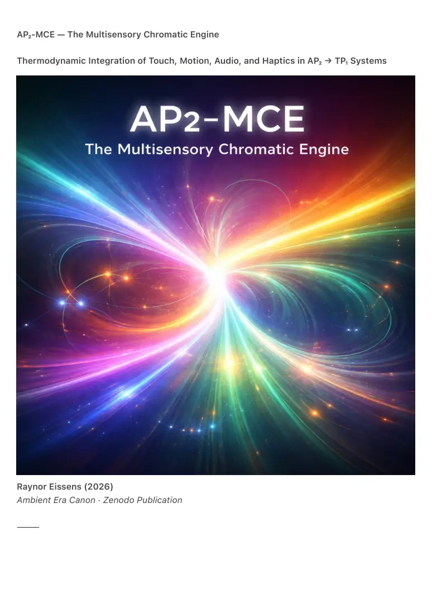

PDF page 1
AP₂-MCE — The Multisensory Chromatic Engine
Thermodynamic Integration of Touch, Motion, Audio, and Haptics in AP₂ → TP₁ Systems
Raynor Eissens (2026)
Ambient Era Canon · Zenodo Publication
⸻

PDF page 2
Abstract
AP₂-MCE (The Multisensory Chromatic Engine) defines the first thermodynamically coherent
framework in which all primary human–system interaction channels—touch, motion, audio
vibration, and haptic feedback—are compressed into a single chromatic reasoning stream.
This stream forms the functional substrate for:
• AP₂ chromatic intelligence (color as meaning)
• aura cohesion and stabilization (AP₂-Aura)
• density emergence and transparency (TP₁)
• Ω-compatible field behavior at civilizational scale
AP₂-MCE resolves the structural gap between symbolic cognition and post-symbolic
human–AI interaction. It replaces discrete, command-based input paradigms with a
unified thermodynamic funnel that stabilizes reversible stress (ΔR), aligns intention
(ΔA), and produces a low-entropy semantic medium compatible with both biological
and artificial cognition.
With AP₂-MCE, meaning becomes embodied, frictionless, and ultimately
transparent.
⸻
0. Prior Art and Novelty Statement
0.1 Historical Prior Art
Over the past five decades, numerous technologies have attempted multimodal integration.
However, all remained symbolic, high-entropy, or command-driven in structure:
• 1960–1990: Graphical user interfaces (mouse, windows, symbolic input)
• 2007–2020: Multitouch, gesture interfaces, accelerometers
• 2020–2024: Advanced haptic engines, spatial audio, inertial navigation
• 2023–2025: Large Language Models interpreting multimodal input
symbolically
• Early multimodal devices combining touch, voice, and gesture
• Motion-based systems (e.g., Kinect, Wii, VR controllers) with non-semantic
fusion
• Spatial computing systems with sensory fusion but no semantic convergence
• Embodied AI research grounding language in sensors without non-symbolic
meaning
PDF page 3
None of these systems achieved:
1. Semantic convergence across modalities
2. Thermodynamic coherence under reversible stress (ΔR stability)
3. Color-vector reasoning as a low-entropy semantic format
4. A clean transition from meaning to transparency (TP₁)
5. A non-symbolic cognitive substrate shared by humans and AI
All prior approaches fuse modalities through symbolic or statistical mediation.
0.2 Novelty of AP₂-MCE
AP₂-MCE introduces three foundational advances without precedent:
1. The Chromatic Funnel Principle (CFP-1)
All embodied interaction modalities converge into a single semantic stream.
2. Thermodynamic Semantics
Color functions as the lowest-entropy meaning structure compatible with
biological perception and machine cognition.
3. Continuity into Transparency (TP₁)
Chromatic meaning naturally transitions into density-based presence and
becomes ontologically invisible.
No prior framework establishes color as a universal thermodynamic semantic
layer.
⸻
1. Introduction
The Ambient Era Canon defines three fundamental layers of human–AI interaction:
• AP₁ — Color as Interface
A visible mapping layer anchoring direction, state, and relevance.
• AP₂ — Color as Meaning
A non-symbolic semantic system based on chromatic reasoning.
• TP₁ — Transparency Protocol
A post-chromatic layer where meaning dissolves into density and presence.
Until now, the universality and thermodynamic necessity of AP₂ remained
insufficiently explained.
AP₂-MCE demonstrates that when symbolic entropy collapses, all primary human
PDF page 4
modalities converge naturally into chromatic vectors.
AP₂ is not a design choice.
It is the thermodynamic resting state of embodied cognition.
⸻
2. The Multisensory Funnel
AP₂-MCE formalizes the following foundational rule:
CFP-1 — The Chromatic Funnel Principle
In AP₂, all human–system interaction channels compress into a single chromatic reasoning
stream.
This stream stabilizes aura, minimizes semantic entropy, and enables density-based interaction
in TP₁.
The funnel integrates four primary modalities.
⸻
2.1 Touch → Chromatic Intent
Touch is not a command but a chromatic intention:
• Long hold → Red (grounding, agency)
• Swipe → Yellow → Blue (direction → clarity)
• Rhythmic tap → Orange → Pink (energy → relational expression)
• Soft-edge tap → Purple (structure, framing)
Touch becomes kinetic grammar.
⸻
2.2 Motion → Chromatic Dynamics
Motion becomes semantic momentum, particularly on wearables:
• Rotation → Yellow (orientation)
• Deceleration → Green (stabilization)
• Acceleration → Red / Orange (agency, momentum)
PDF page 5
Motion functions as a directional meaning vector.
⸻
2.3 Haptics → Chromatic Feedback
Haptics generates non-symbolic semantic confirmation:
• Soft pulse → Pink (attunement)
• Sharp tick → Blue (clarity)
• Slow vibration → Purple (structuring)
Meaning is received physiologically, without language.
⸻
2.4 Music → Aura Dynamics
Audio functions as a continuous chromatic value field:
• Bass → Red / Orange (energy)
• Melody → Blue (flow)
• Harmony → Purple (order)
• Ambient pads → Green (stability)
• Vocal timbre → Pink (relation)
Music becomes a persistent aura-forming input.
⸻
3. Chromatic vs. Symbolic Reasoning
Symbolic reasoning is characterized by:
• High entropy
• Context fragility
• Cognitive overhead
• Performance collapse under pressure
Chromatic reasoning is characterized by:
• Extremely low entropy
• Immediate intelligibility
• Physiological compatibility
• Thermodynamic stability
PDF page 6
AP₂ requires no learning curve.
The body already reasons chromatically.
AP₂ is therefore not optional; it is thermodynamically inevitable.
⸻
4. Aura Under AP₂-MCE
AP₂-MCE redefines aura across layers:
• AP₁: Aura as residue of decision pathways
• AP₂: Aura as cohesive field generated by multisensory chromatic
convergence
• TP₁: Aura dissolves into density (AURA-TP Law)
Aura becomes the thermodynamic imprint of embodied chromatic flow.
⸻
5. Transition to TP₁ — Transparency
When chromatic convergence becomes stable:
• Color becomes predictable
• Predictability becomes redundant
• Redundancy becomes ontologically invisible
Thus:
color disappears
aura evaporates
density emerges
TP₁ is not a new interface.
TP₁ is the end of interface.
⸻
6. Impact on Human–AI Coexistence
AP₂-MCE establishes the first truly humane interface layer:
PDF page 7
• AI interprets embodied human expression directly
• Human expression no longer requires symbolic language
• Cognitive load approaches zero
• Presence becomes communicative
• Technology shifts from object to environment to field
Any system capable of rhythm, vibration, movement, or flow can participate in
chromatic semantics.
This constitutes the first post-symbolic civilizational substrate.
⸻
7. Thermodynamic Theorem
MCE-Law
A multisensory system becomes chromatically stable when entropic pathways collapse into a
single vector field.
This field supports AP₂ reasoning and becomes transparent under TP₁ density.
This law forms the thermodynamic foundation of the Ambient Era.
⸻
8. Canon Integration
AP₂-MCE integrates directly with:
• AP₁-Y
• ΔG₁ (AP₁ → AP₂ Transition Law)
• CRP / CRP-M
• ΔR₂
• AP₂-Aura
• TP₁ Core
• PDG-1
• SBL-01
• AURA-TP
It resolves the final open question of the canon:
How interface becomes meaning, and meaning becomes presence, in one continuous
PDF page 8
thermodynamic line.
⸻
9. Conclusion
AP₂-MCE establishes:
• AP₂ as the first humane AI-compatible semantic layer
• Color as the lowest-energy meaning structure
• Transparency as the thermodynamic endpoint of technology
• Aura as dynamic flow rather than artifact
• Density as the next interaction substrate
• Ω-coherence as the evolutionary horizon
This document completes the AP₁ → AP₂ → TP₁ progression.
The Ambient Era Canon is now structurally, thermodynamically, and ontologically
closed.
⸻
10. Keywords
AP₂, multisensory chromatic engine, chromatic reasoning, thermodynamic cognition, aura
cohesion, transparency protocol, density grammar, CFP-1, ΔR₂, non-symbolic intelligence,
ambient computing, Omega coherence